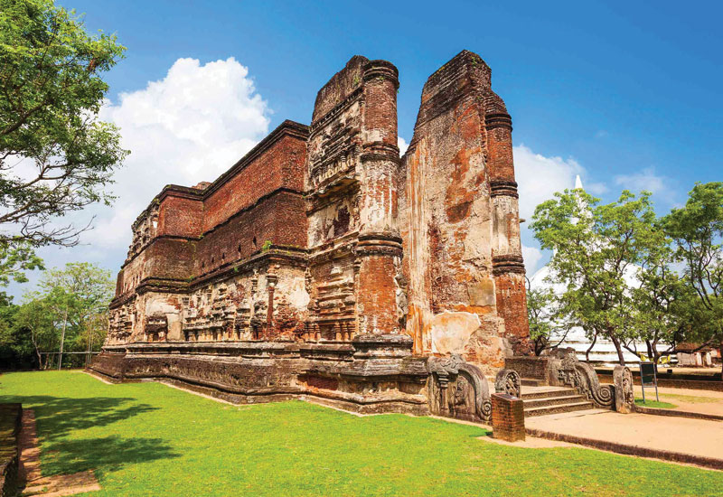
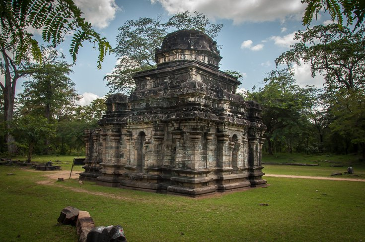
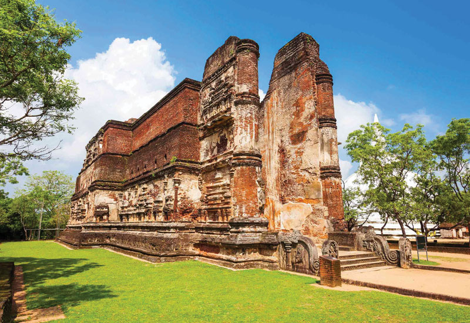
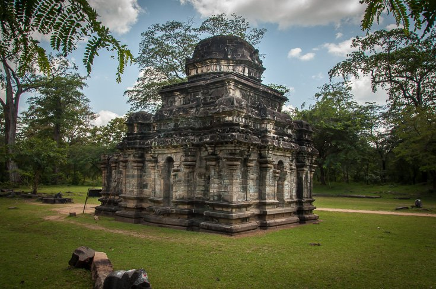

Ancient City of Polonnaruwa
Polonnaruwa is the main town of the Polonnaruwa district in North Central Province.
- Area - 3,293 km2
- Weather - 34C, wind W at 8km/h 53% Humidity
- Province - North Central Province
was the second capital of Sri Lanka after the destruction of Anuradhapura in 993. It comprises, besides the Brahmanic monuments built by the Cholas, the monumental ruins of the fabulous garden city created by Parakramabahu I in the 12th century.
Historical Landmarks In Polonnaruwa
- Parakrama Samudra
- Stupa
- Vatadageya
- Polonnaruwa Gal Viharaya
- Minneriya National park
 Sri Lankan Hotel deals
Sri Lankan Hotel deals


 


